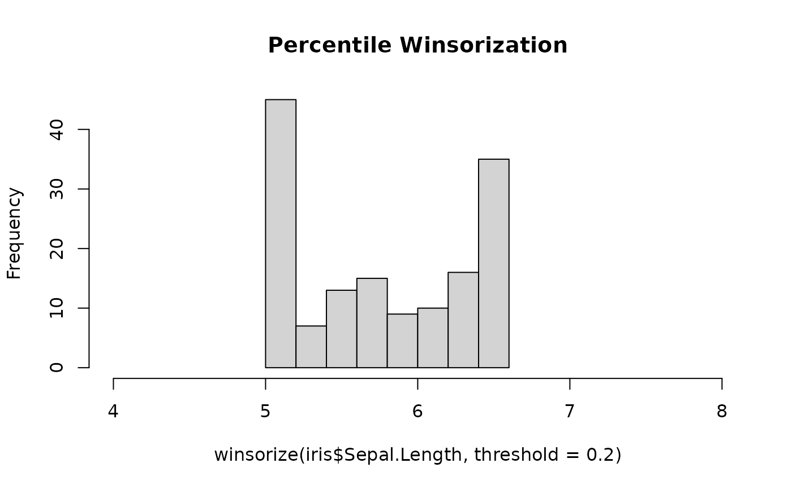
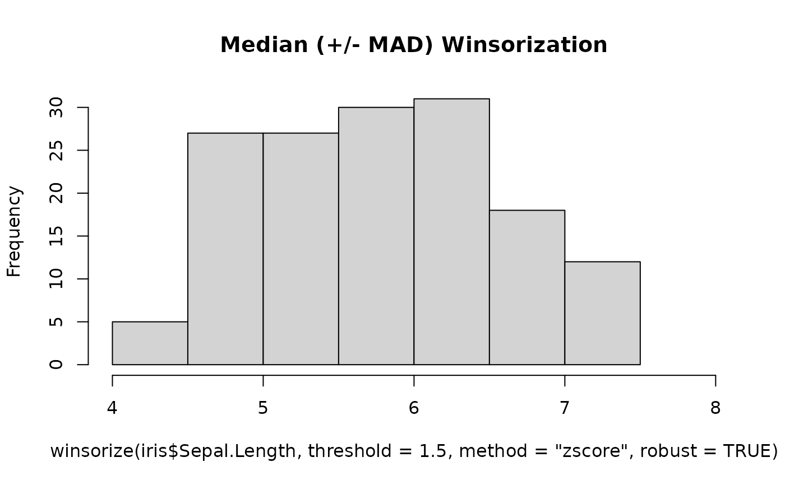
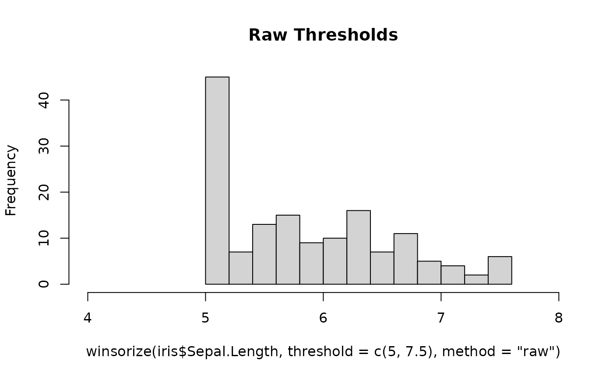

Winsorize data
Usage
winsorize(data, ...)
# S3 method for class 'numeric'
winsorize(
data,
threshold = 0.2,
method = "percentile",
robust = FALSE,
verbose = TRUE,
...
)Arguments
- data
data frame or vector.
- ...
Currently not used.
- threshold
The amount of winsorization, depends on the value of
method:For
method = "percentile": the amount to winsorize from each tail. The value ofthresholdmust be between 0 and 0.5 and of length 1.For
method = "zscore": the number of SD/MAD-deviations from the mean/median (seerobust). The value ofthresholdmust be greater than 0 and of length 1.For
method = "raw": a vector of length 2 with the lower and upper bound for winsorization.
- method
One of "percentile" (default), "zscore", or "raw".
- robust
Logical, if TRUE, winsorizing through the "zscore" method is done via the median and the median absolute deviation (MAD); if FALSE, via the mean and the standard deviation.
- verbose
Not used anymore since
datawizard0.6.6.
Details
Winsorizing or winsorization is the transformation of statistics by limiting
extreme values in the statistical data to reduce the effect of possibly
spurious outliers. The distribution of many statistics can be heavily
influenced by outliers. A typical strategy is to set all outliers (values
beyond a certain threshold) to a specified percentile of the data; for
example, a 90% winsorization would see all data below the 5th percentile set
to the 5th percentile, and data above the 95th percentile set to the 95th
percentile. Winsorized estimators are usually more robust to outliers than
their more standard forms.
See also
Add a prefix or suffix to column names:
data_addprefix(),data_addsuffix()Functions to reorder or remove columns:
data_reorder(),data_relocate(),data_remove()Functions to reshape, pivot or rotate data frames:
data_to_long(),data_to_wide(),data_rotate()Functions to recode data:
rescale(),reverse(),categorize(),recode_values(),slide()Functions to standardize, normalize, rank-transform:
center(),standardize(),normalize(),ranktransform(),winsorize()Split and merge data frames:
data_partition(),data_merge()Functions to find or select columns:
data_select(),extract_column_names()Functions to filter rows:
data_match(),data_filter()
Examples
hist(iris$Sepal.Length, main = "Original data")
hist(winsorize(iris$Sepal.Length, threshold = 0.2),
xlim = c(4, 8), main = "Percentile Winsorization"
)

hist(winsorize(iris$Sepal.Length, threshold = 1.5, method = "zscore"),
xlim = c(4, 8), main = "Mean (+/- SD) Winsorization"
)
hist(winsorize(iris$Sepal.Length, threshold = 1.5, method = "zscore", robust = TRUE),
xlim = c(4, 8), main = "Median (+/- MAD) Winsorization"
)

hist(winsorize(iris$Sepal.Length, threshold = c(5, 7.5), method = "raw"),
xlim = c(4, 8), main = "Raw Thresholds"
)

# Also works on a data frame:
winsorize(iris, threshold = 0.2)
#> Sepal.Length Sepal.Width Petal.Length Petal.Width Species
#> 1 5.1 3.4 1.5 0.2 setosa
#> 2 5.0 3.0 1.5 0.2 setosa
#> 3 5.0 3.2 1.5 0.2 setosa
#> 4 5.0 3.1 1.5 0.2 setosa
#> 5 5.0 3.4 1.5 0.2 setosa
#> 6 5.4 3.4 1.7 0.4 setosa
#> 7 5.0 3.4 1.5 0.3 setosa
#> 8 5.0 3.4 1.5 0.2 setosa
#> 9 5.0 2.9 1.5 0.2 setosa
#> 10 5.0 3.1 1.5 0.2 setosa
#> 11 5.4 3.4 1.5 0.2 setosa
#> 12 5.0 3.4 1.6 0.2 setosa
#> 13 5.0 3.0 1.5 0.2 setosa
#> 14 5.0 3.0 1.5 0.2 setosa
#> 15 5.8 3.4 1.5 0.2 setosa
#> 16 5.7 3.4 1.5 0.4 setosa
#> 17 5.4 3.4 1.5 0.4 setosa
#> 18 5.1 3.4 1.5 0.3 setosa
#> 19 5.7 3.4 1.7 0.3 setosa
#> 20 5.1 3.4 1.5 0.3 setosa
#> 21 5.4 3.4 1.7 0.2 setosa
#> 22 5.1 3.4 1.5 0.4 setosa
#> 23 5.0 3.4 1.5 0.2 setosa
#> 24 5.1 3.3 1.7 0.5 setosa
#> 25 5.0 3.4 1.9 0.2 setosa
#> 26 5.0 3.0 1.6 0.2 setosa
#> 27 5.0 3.4 1.6 0.4 setosa
#> 28 5.2 3.4 1.5 0.2 setosa
#> 29 5.2 3.4 1.5 0.2 setosa
#> 30 5.0 3.2 1.6 0.2 setosa
#> 31 5.0 3.1 1.6 0.2 setosa
#> 32 5.4 3.4 1.5 0.4 setosa
#> 33 5.2 3.4 1.5 0.2 setosa
#> 34 5.5 3.4 1.5 0.2 setosa
#> 35 5.0 3.1 1.5 0.2 setosa
#> 36 5.0 3.2 1.5 0.2 setosa
#> 37 5.5 3.4 1.5 0.2 setosa
#> 38 5.0 3.4 1.5 0.2 setosa
#> 39 5.0 3.0 1.5 0.2 setosa
#> 40 5.1 3.4 1.5 0.2 setosa
#> 41 5.0 3.4 1.5 0.3 setosa
#> 42 5.0 2.7 1.5 0.3 setosa
#> 43 5.0 3.2 1.5 0.2 setosa
#> 44 5.0 3.4 1.6 0.6 setosa
#> 45 5.1 3.4 1.9 0.4 setosa
#> 46 5.0 3.0 1.5 0.3 setosa
#> 47 5.1 3.4 1.6 0.2 setosa
#> 48 5.0 3.2 1.5 0.2 setosa
#> 49 5.3 3.4 1.5 0.2 setosa
#> 50 5.0 3.3 1.5 0.2 setosa
#> 51 6.5 3.2 4.7 1.4 versicolor
#> 52 6.4 3.2 4.5 1.5 versicolor
#> 53 6.5 3.1 4.9 1.5 versicolor
#> 54 5.5 2.7 4.0 1.3 versicolor
#> 55 6.5 2.8 4.6 1.5 versicolor
#> 56 5.7 2.8 4.5 1.3 versicolor
#> 57 6.3 3.3 4.7 1.6 versicolor
#> 58 5.0 2.7 3.3 1.0 versicolor
#> 59 6.5 2.9 4.6 1.3 versicolor
#> 60 5.2 2.7 3.9 1.4 versicolor
#> 61 5.0 2.7 3.5 1.0 versicolor
#> 62 5.9 3.0 4.2 1.5 versicolor
#> 63 6.0 2.7 4.0 1.0 versicolor
#> 64 6.1 2.9 4.7 1.4 versicolor
#> 65 5.6 2.9 3.6 1.3 versicolor
#> 66 6.5 3.1 4.4 1.4 versicolor
#> 67 5.6 3.0 4.5 1.5 versicolor
#> 68 5.8 2.7 4.1 1.0 versicolor
#> 69 6.2 2.7 4.5 1.5 versicolor
#> 70 5.6 2.7 3.9 1.1 versicolor
#> 71 5.9 3.2 4.8 1.8 versicolor
#> 72 6.1 2.8 4.0 1.3 versicolor
#> 73 6.3 2.7 4.9 1.5 versicolor
#> 74 6.1 2.8 4.7 1.2 versicolor
#> 75 6.4 2.9 4.3 1.3 versicolor
#> 76 6.5 3.0 4.4 1.4 versicolor
#> 77 6.5 2.8 4.8 1.4 versicolor
#> 78 6.5 3.0 5.0 1.7 versicolor
#> 79 6.0 2.9 4.5 1.5 versicolor
#> 80 5.7 2.7 3.5 1.0 versicolor
#> 81 5.5 2.7 3.8 1.1 versicolor
#> 82 5.5 2.7 3.7 1.0 versicolor
#> 83 5.8 2.7 3.9 1.2 versicolor
#> 84 6.0 2.7 5.1 1.6 versicolor
#> 85 5.4 3.0 4.5 1.5 versicolor
#> 86 6.0 3.4 4.5 1.6 versicolor
#> 87 6.5 3.1 4.7 1.5 versicolor
#> 88 6.3 2.7 4.4 1.3 versicolor
#> 89 5.6 3.0 4.1 1.3 versicolor
#> 90 5.5 2.7 4.0 1.3 versicolor
#> 91 5.5 2.7 4.4 1.2 versicolor
#> 92 6.1 3.0 4.6 1.4 versicolor
#> 93 5.8 2.7 4.0 1.2 versicolor
#> 94 5.0 2.7 3.3 1.0 versicolor
#> 95 5.6 2.7 4.2 1.3 versicolor
#> 96 5.7 3.0 4.2 1.2 versicolor
#> 97 5.7 2.9 4.2 1.3 versicolor
#> 98 6.2 2.9 4.3 1.3 versicolor
#> 99 5.1 2.7 3.0 1.1 versicolor
#> 100 5.7 2.8 4.1 1.3 versicolor
#> 101 6.3 3.3 5.3 1.9 virginica
#> 102 5.8 2.7 5.1 1.9 virginica
#> 103 6.5 3.0 5.3 1.9 virginica
#> 104 6.3 2.9 5.3 1.8 virginica
#> 105 6.5 3.0 5.3 1.9 virginica
#> 106 6.5 3.0 5.3 1.9 virginica
#> 107 5.0 2.7 4.5 1.7 virginica
#> 108 6.5 2.9 5.3 1.8 virginica
#> 109 6.5 2.7 5.3 1.8 virginica
#> 110 6.5 3.4 5.3 1.9 virginica
#> 111 6.5 3.2 5.1 1.9 virginica
#> 112 6.4 2.7 5.3 1.9 virginica
#> 113 6.5 3.0 5.3 1.9 virginica
#> 114 5.7 2.7 5.0 1.9 virginica
#> 115 5.8 2.8 5.1 1.9 virginica
#> 116 6.4 3.2 5.3 1.9 virginica
#> 117 6.5 3.0 5.3 1.8 virginica
#> 118 6.5 3.4 5.3 1.9 virginica
#> 119 6.5 2.7 5.3 1.9 virginica
#> 120 6.0 2.7 5.0 1.5 virginica
#> 121 6.5 3.2 5.3 1.9 virginica
#> 122 5.6 2.8 4.9 1.9 virginica
#> 123 6.5 2.8 5.3 1.9 virginica
#> 124 6.3 2.7 4.9 1.8 virginica
#> 125 6.5 3.3 5.3 1.9 virginica
#> 126 6.5 3.2 5.3 1.8 virginica
#> 127 6.2 2.8 4.8 1.8 virginica
#> 128 6.1 3.0 4.9 1.8 virginica
#> 129 6.4 2.8 5.3 1.9 virginica
#> 130 6.5 3.0 5.3 1.6 virginica
#> 131 6.5 2.8 5.3 1.9 virginica
#> 132 6.5 3.4 5.3 1.9 virginica
#> 133 6.4 2.8 5.3 1.9 virginica
#> 134 6.3 2.8 5.1 1.5 virginica
#> 135 6.1 2.7 5.3 1.4 virginica
#> 136 6.5 3.0 5.3 1.9 virginica
#> 137 6.3 3.4 5.3 1.9 virginica
#> 138 6.4 3.1 5.3 1.8 virginica
#> 139 6.0 3.0 4.8 1.8 virginica
#> 140 6.5 3.1 5.3 1.9 virginica
#> 141 6.5 3.1 5.3 1.9 virginica
#> 142 6.5 3.1 5.1 1.9 virginica
#> 143 5.8 2.7 5.1 1.9 virginica
#> 144 6.5 3.2 5.3 1.9 virginica
#> 145 6.5 3.3 5.3 1.9 virginica
#> 146 6.5 3.0 5.2 1.9 virginica
#> 147 6.3 2.7 5.0 1.9 virginica
#> 148 6.5 3.0 5.2 1.9 virginica
#> 149 6.2 3.4 5.3 1.9 virginica
#> 150 5.9 3.0 5.1 1.8 virginica